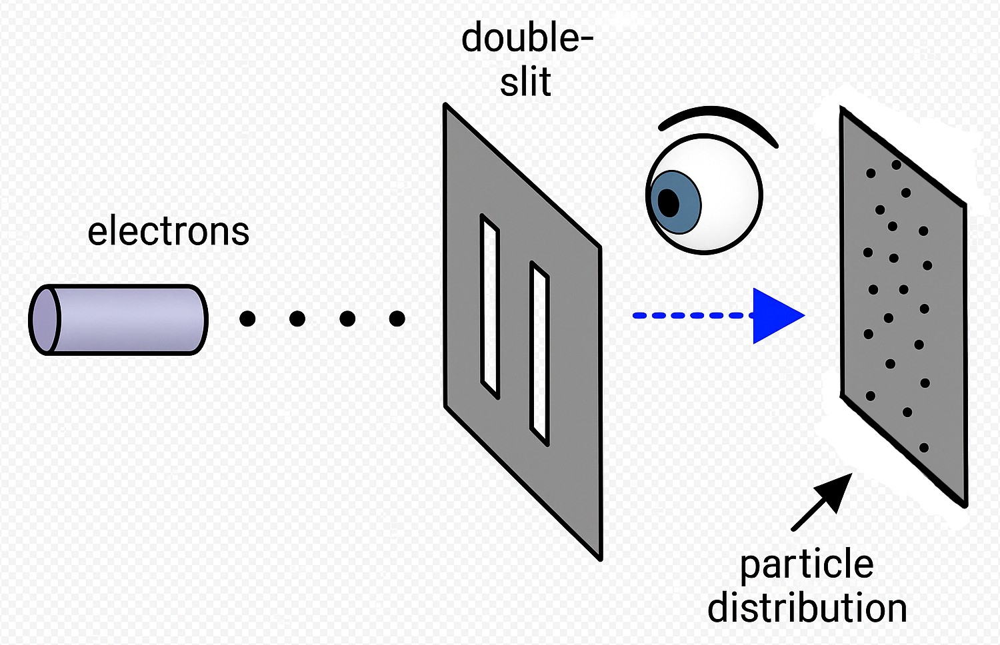
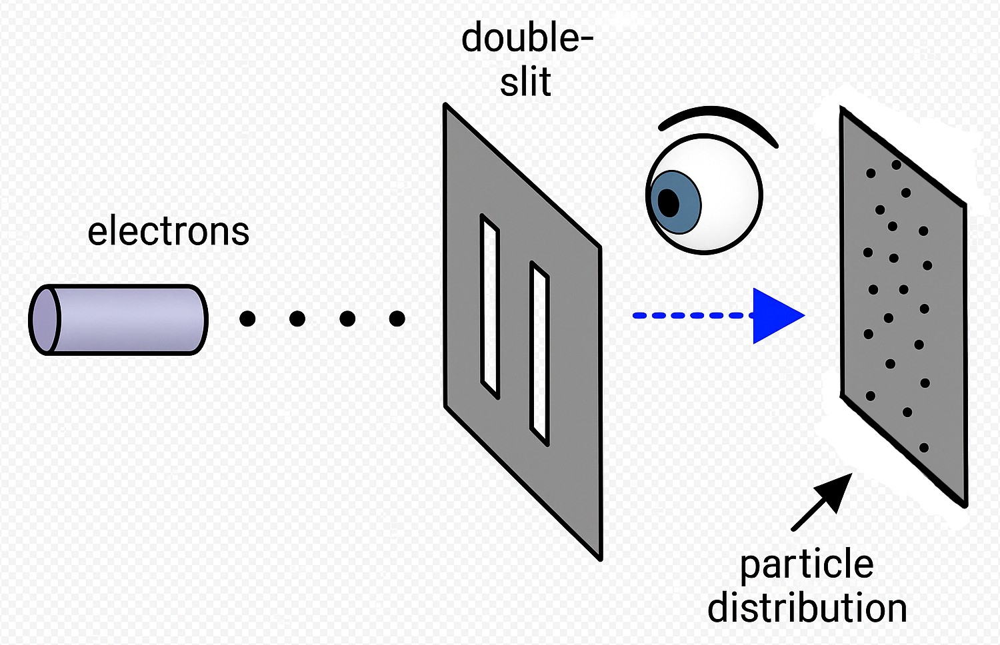

Chapter 2: Quantum Reality - When Physics Meets Consciousness
"Faith is the substance of things hoped for, the evidence of things not seen." — Hebrews 11:1
Quantum physics has shattered our comfortable illusions about reality like a cosmic wrecking ball. Picture this: scientists rolled up their sleeves, grabbed their microscopes, and dove into the subatomic realm expecting to find tiny billiard-ball particles—you know, the neat little building blocks that would make sense of everything. Instead, they stumbled into a bewildering world that makes Alice's Wonderland look like a Sunday picnic. Particles that exist as probability waves until someone looks at them? Effects that happen before their causes? Particles that stay mysteriously connected across vast distances like cosmic best friends who never lost touch? It's enough to make your brain do somersaults.
This isn't just some quirky footnote that professors whisper about in dusty lecture halls. It's a full-blown revolution in how we understand reality—and it's got profound implications for everything we thought we knew about spirituality. Suddenly, Jesus' teachings about consciousness, faith, and manifestation don't sound like ancient poetry anymore. They sound like he was reading from a quantum physics textbook written two thousand years ahead of its time.
Perhaps no experiment better illustrates the bizarre nature of quantum reality than the famous double-slit experiment. When scientists fire electrons or photons through two slits, they create an interference pattern as if they were waves passing through both slits simultaneously. But when they set up detectors to observe which slit each particle passes through, the interference pattern disappears, and the particles behave like solid objects going through one slit or the other.
The radical implication: The act of OBSERVATION ITSELF determines whether reality manifests as waves or particles. Consciousness shapes physical reality.
 

This is where quantum physics aligns remarkably with Jesus' teachings about faith and manifestation. Jesus repeatedly emphasized that what we believe—how we observe and interpret reality—directly impacts what manifests in our experience.
Jesus wasn't dispensing a handy incantation; He was sketching the deep mechanics of existence. In quantum language, every situation begins as a wave‑function—a shimmering cloud of possibilities that could crystallize in countless ways. The instant an observer looks, measures, or even expects, that cloud "collapses" into one definite outcome. In gospel language, faith is that act of observation. It is the steady gaze of consciousness that selects one future from many and ushers it into physical form.
Think of it like tuning a radio. Countless stations fill the air, but you hear only the one your dial locks onto. Faith is the dial‑setting of the mind and heart; quantum reality is the invisible spectrum waiting to become audible. When Jesus said, "According to your faith, let it be done," He was pointing out that our inner certainty—our chosen frequency—determines which potential becomes the station we live in.
This is why placebo surgeries can spark real healing, why hopeful expectations can shift the trajectory of an illness, and why despair can wither possibilities that once seemed within reach. At every scale, from subatomic particles to life‑changing decisions, consciousness is not a passive witness but an active participant, continuously collapsing the may‑be into the now‑is.
Consider these key quantum principles and their spiritual parallels:
| Quantum Principle | Spiritual Parallel |
|---|---|
| Wave-Particle Duality: Subatomic entities exist as probability waves until observed | Possibilities exist in a state of potential until "observed" through faith and expectation |
| Observer Effect: The act of measurement affects what is being measured | Our consciousness directly influences our experiential reality |
| Quantum Entanglement: Particles remain connected regardless of distance | Spiritual oneness transcends physical separation |
| Quantum Superposition: Particles exist in multiple states simultaneously | Multiple possibilities exist simultaneously until choice/faith manifests one |
| Quantum Field Theory: Empty space teems with virtual particles and energy | The "void" is actually full of divine potential and creative power |
Here's where things get really interesting—leading physicists have been forced to confront the role of consciousness in quantum mechanics, and it's been quite the intellectual earthquake. Nobel laureate Eugene Wigner, scratching his head at the bizarre results, finally threw up his hands and concluded: "It was not possible to formulate the laws of quantum mechanics in a fully consistent way without reference to consciousness." Talk about a scientific bombshell!
Then there's physicist John Wheeler, who actually worked with Einstein himself. This guy had the audacity to propose that we live in a "participatory universe"—basically saying we're not just passive spectators watching the cosmic show, but active participants in creating reality. His mind-bending delayed-choice experiments suggest something even crazier: not only does observation affect the present, but it may even influence the past. Yes, you read that right—the past! It's like the universe has been running a cosmic time-travel experiment and forgot to tell us the rules.
Now here's the kicker—Jesus taught that asking, seeking, and knocking—acts of conscious intention—open doors to new realities. But hold on, this isn't just your run-of-the-mill positive thinking seminar.

This is operating in alignment with how the quantum universe actually functions. Jesus wasn't giving us feel-good advice; he was literally teaching us how to work the cosmic system!
When Jesus performed what we call "miracles," he wasn't some cosmic rule-breaker violating natural law. Nope—he was operating at a higher level of it. Think of it like this: while everyone else was playing checkers, Jesus was playing 3D chess at the quantum level where consciousness directly shapes matter. He understood something mind-blowing: the seemingly solid world is actually a responsive sea of energy and information, just waiting to be shaped by consciousness and belief. It's like he had the universe's secret instruction manual, and he was showing us how to use it.
Here's where Jesus' healing miracles get really mind-bending in light of quantum physics. When he told people "your faith has healed you," he wasn't being modest or diminishing his own role. No way! He was actually acknowledging a profound truth: healing involves a quantum shift in consciousness that allows new physical possibilities to manifest. It's like he was saying, "You've just tuned your consciousness to the healing frequency—now watch what happens!"
And get this—modern research into spontaneous remissions and the placebo effect is basically confirming what Jesus knew all along: consciousness can indeed trigger profound physical changes that make conventional medicine scratch its head and say, "How the heck did that happen?" It's like the universe has been keeping this secret for centuries.
The quantum view helps us understand Jesus' emphasis on transformed perception. This isn't just poetic language but a description of how reality operates—how our perception (observation) shapes the reality we experience.
A paraphrased version of this verse could be: The eye [how you perceive things in your consciousness or your awareness] determines what you experience in the 3D world. What you perceive in your inner world, your imagination, manifests in your outer world.
Now here's where things get really wild—even Jesus' most challenging teaching about moving mountains through faith makes perfect sense in a quantum framework.
Picture this: at the quantum level, that massive mountain you see? It's not as solid or fixed as it appears. It's actually responsive to consciousness. Those towering peaks, those solid rock faces—they're ultimately patterns of energy and information that can be influenced by consciousness operating at the quantum level. It's like the entire mountain is just a really convincing 3D hologram, and Jesus knew how to adjust the settings!
But hold your horses—this isn't to say that anyone can just snap their fingers and move mountains tomorrow morning. Most of us are deeply conditioned by materialist programming that's been hammered into our heads since birth. We've been told that rocks are rocks, mountains are mountains, and that's that. And here lies the challenge: our collective and individual belief systems create powerful constraints on what we can manifest. It's like we're all wearing invisible straightjackets made of limiting beliefs. But here's the beautiful thing: Jesus operated from a consciousness free from these limitations—and he was basically saying, "Hey, you can take off that straightjacket too!"
When Jesus declared that "the kingdom of God is within you" (Luke 17:21), he wasn't just dropping some poetic wisdom. He was pointing to this quantum reality—that the creative power of the universe isn't somewhere "out there" but within consciousness itself. Mind blown yet? The kingdom isn't a place but a state of consciousness that recognizes its oneness with the quantum field of all possibilities. It's like he was saying, "Hey, you've got the universe's cheat codes built right into your awareness—you just need to remember how to use them!"
Here's the beautiful thing—as quantum physics continues to evolve, it increasingly supports a worldview where consciousness is fundamental, not incidental. We're talking about a reality where mind and matter are different aspects of the same underlying reality. This is a complete game-changer! This is not the dualistic, mechanistic universe that Western religion and science have been peddling for centuries like it was the final word on everything.
No, my friends—it's a participatory universe where you are not a passive observer but an active creator. This is the universe Jesus knew and taught about—one where "all things are possible for one who believes" (Mark 9:23). He wasn't just being optimistic; he was stating a fundamental truth about how reality actually works!
In the next chapter, we're going to dive deep into the observer effect and uncover something that will blow your mind: you are constantly creating your reality through your observations, beliefs, and expectations—whether you realize it or not. The 'Manifestation' folk were right all along! Who would've thought that the people we used to dismiss as wishful thinkers were actually operating with a more accurate understanding of reality than most scientists? The universe has been trying to tell us this all along—we just needed quantum physics to catch up and confirm what mystics and visionaries have known for millennia.